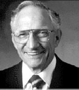

PC时代必须记住的20位英雄
回首PC20年，它的历史就是一部英雄的历史，一个个闪亮的名字，就像一颗颗璀璨的星星，为人羡慕、令人敬仰；他们对PC业的兴起，对计算机技术的繁荣，对人类的贡献是我们不应忘记的。当本文重现历史的一幕幕时，我们会看到什么?无疑，其中有光辉与荣耀，有财富与成就，当然，也有遗憾与悲怆……
一、电脑始祖：冯·诺依曼
冯·诺依曼(John Von Neuman)凭他的天才和敏锐，在电脑初创期，高屋建瓴地提出了现代计算机的理论基础，从而规范和决定了电脑的发展方向。时至今日，我们所有的电脑又都叫“冯·诺依曼机器”，就是对这位数学天才最好的评价。
对于冯·诺依曼来说，人类第一台电脑造了一半时才参与开发，多少有些遗憾。但是，他刚好在那大机器程序存储问题无法解决的关键时刻出现，这使得冯·诺依曼的天才得到淋漓尽致的发挥。他明确指出：一定要彻底实现程序由外存储向内存储的转化，原有的设计必须作修改，经费不够再追加。在冯·诺依曼的影响下，整个研制工作取得了突破性的进展。冯·诺依曼提出了新的改进方案：一是用二进制代替十进制，进一步提高电子元件的运算速度；二是存储程序(Stored Program)，即把程序放在计算机内部的存储器中，换言之，把能进行数据处理的程序放在数据处理系统内部，程序和该程序处理的数据用同样的方式储存，即把程序本身当作数据来对待。冯·诺依曼的改进方案被称为“爱达法克”(EDVAC)，即离散变量自动电子计算机(Electronic Diserete Variable Computer)的简称。
1945年6月，他写了一篇题为《关于离散变量自动电子计算机的草案》的论文，第一次提出了在数字计算机内部的存储器中存放程序的概念(Stored Program Concept)，这是所有现代电子计算机的范式，被称为“冯·诺依曼结构”。按这一结构建造的电脑称为存储程序计算机(Stored Program Computer)，又称为通用计算机。时至今日，所有的电脑都逃脱不了冯·诺依曼的掌心，我们所有的电脑，都有一个共同的名字，叫“冯·诺依曼机器”，它超越了品牌、国界、速度和岁月。
二、摩尔定律：高登·摩尔

当人们不断追逐新款PC时,殊不知这后面有一只无形的大手在推动,那就是摩尔定律,而这著名定律的发明人就是高登·摩尔(Gordon Moore)。
1965年的一天，摩尔顺手拿了把尺子和一张纸，画了一张草图，纵坐标代表不断发展的集成电路，横坐标是时间。他在月份上逐个描点，得到一幅增长的曲线图。这条曲线显示出每24个月，集成电路由于内部晶体管数量的几何级数的增长，而使性能几乎翻倍提高，同时集成电路的价格也恰好减少一倍。后来高登·摩尔把时间调整为18个月。摩尔是在集成电路技术的早期作出结论的，那时候，超大规模集成电路技术还远未出现，所以他在1965年的预言并未引起世人的注意。
高登·摩尔的另一壮举是在1968年与罗伯特·诺伊斯带头“造反”，率领一群工程师离开仙童公司，成立了一家叫集成电子的公司，简称“Intel”，这就是今日名震世界的英特尔公司。
三、预言大师：阿伦·凯
凯的形象既不像傲慢自大、反潮流的黑客，也不同于一夜暴富的计算机富翁，更不像象牙塔里的计算机科学家。他时常穿着跑鞋和灯芯绒裤子，一小撮胡子，短短的、略微零乱的头发，使他看上去极为普通。即使他是你的老板，可能也不会给你留下多深的印象。但这也不是说他很谦逊，他喜欢引用自己的话，且经常以这样的词作为发言的开端：“凯的第一法则指出……”。
阿伦·凯（Alan Kay）不是一位公众人物，但在计算机界，尤其是技术圈内，他是能让大家都心服口服屈指可数的大师之一。成为硅谷的又一位亿万富翁或让他当麻省理工的院长，都无法激起他的兴奋，但他会有足够的耐性与一群8岁左右的孩子一起玩电脑。他最大的乐趣就是发明他喜欢的东西。
阿伦·凯是Smalltalk面向对象编程环境语言的发明人之一，也是面向对象编程思想的创始人之一，同时，他还是笔记本电脑最早的构想者和现代Windows GUI的建筑师。
近年来有一句话挺流行：“预测未来的最好办法，就是把它创造出来。”不少人误以为此言出自尼葛洛庞帝之口，实际上，这句话是阿伦·凯的名言。有很多人说布兰德是第一个使用PC一词的人，但布兰德说自己也是顺手牵羊，最早提出“PC”概念的就是阿伦·凯。20世纪90年代程序员设计的基本模式就是“面向对象”，发明这一术语的也是阿伦·凯。在20世纪70年代的一份备忘录上，阿伦·凯还正确预言到，“20世纪90年代将有成百万的个人计算机，而且都将连接到全球公用的信息设施上”，这不正是今天的互联网吗？
四、集成电路之父：罗伯特·诺伊斯
硅谷是传奇人士扎堆之地。但是一个人要想在硅谷同时获得财富、威望和成就，实在比登天还难。举目远眺大概只有罗伯特·诺伊斯(Robort Noyce)才是惟一一位三位于一体式的人物。
作为集成电路的发明者，诺伊斯在科学史上已名垂青史，这个具有划时代意义的发明促成了历史的大转折。而且他还与别人共同创办了两家硅谷最伟大的公司，第一家是半导体工业的摇篮——仙童（Fairchild）公司，这已成为历史；第二家则仍跻身美国最大的公司之列，这就是英特尔公司。他带着特有的神圣和威严，让同行和对手都得永远敬仰。以尖刻著称的硅谷杂志《Upside》敢对硅谷任何一位大腕儿进行任何刺激，但对诺伊斯却只能毕恭毕敬，在诺伊斯去世前几天的采访录，甚至成为杂志社经常炫耀的一种荣光。
在仙童，诺伊斯最大的成就是发明了集成电路。当基尔比在德州仪器用锗晶片研制集成电路时，诺伊斯和摩尔已把眼光直接盯住了硅晶片，因为硅的商业前景要远远超出锗。1959年2月，诺伊斯为“微型电路”申请了专利，但没有为他用平面处理技术制造的集成电路申请专利，直到同年7月才补全了这一手续。而此前德州仪器公司已宣布生产集成电路的产品，该公司的基尔比拥有第一个专利，但他的设计不实际，而诺伊斯则是第二个提出该专利的人。于是整个60年代，仙童和德仪相互控告，最后法庭将集成电路的发明专利授予了基尔比，而将关键的内部连接技术专利授予诺伊斯。诺伊斯的专利使仙童公司在沉闷的70年代得以存活下来，这一时期的仙童成为硅谷最具神话色彩的历史。
当然诺伊斯成就的最高峰还是英特尔公司，他与高登·摩尔和安迪·葛鲁夫一同创业，而且构建了业界极为罕见、完美和谐的三人“执政”局面。三人的合作只能说是天作之合，缺任何一位可能都会让英特尔历史大幅改写。诺伊斯自然是最耀眼的人物，传奇式的发明家、仙童公司的总经理和半导体业的“政治家”，他是英特尔公司的“脸面”。而甘于默默无闻的高登·摩尔则是公司的“心脏”，没有摩尔，英特尔不可能有足够的力量和士气；而没有强硬的葛鲁夫，英特尔甚至不会成为一家著名的大公司。
五、微处理器之父：特德·霍夫
1971年1月，第一个可以运转的微处理器诞生了，定名为“4004型”。其中，第一个“4”是指以4位为单位的设计思想，后一个“4”是指由英特尔制造的第4种专用芯片，而它的发明人就是特德·霍夫。霍夫认为自己占了天时和地利之便：“如果我们没有在1971年发明4004微处理器，那么别人也会在一两年里发明它。”
在普遍认为大型机才是大有可为的时代，霍夫另辟蹊径，投入到微处理器的研制中。霍夫说服了刚从仙童公司跳槽的斯坦·麦卓尔与他合作，共同设计了一种比4004型更强大的微处理器，称为“8008型”，这是第一个真正意义的微处理器。
1973年8月，“8080型”微处理器问世，它首次使用了MOS(金属氧化物半导体)工艺，成为有史以来最成功的微处理器之一，这也是第一个通用微处理器，是20世纪最后25年里一项具有划时代意义的发明。
著名的《经济学家》杂志将霍夫称作是“第二次大战以来最有影响的7位科学家之一”。1978年，他被提升为英特尔研究员(至今一共只有两个人获得过类似的称号)，这意味着他在研究方面具有很大的自主权。
在评价微处理器和PC时，霍夫说：“我对微处理器在个人计算机中的应用感到非常惊讶，我也没有想到人们会仅仅为了业余的爱好而买微机。随着影像游戏机的发展，个人计算机成为人们又一种娱乐工具，任何一位发明家如果能够创造出什么来提供给人们娱乐，他就能获得成功。”
六、PC之父：爱德华·罗伯茨
创造出世界上第一台微电脑的殊荣，现在一般都归到爱德华·罗伯茨（Edward Roberts）身上。
罗伯茨是位电脑爱好者，1974年，罗伯茨决定利用8080微处理器装配一种供黑客试验的计算机，《大众电子》杂志为寻找独家新闻，主动上门观看了罗伯茨的设计方案，之后决定让他制成一台原型机，由杂志社在封面予以报道。
1975年１月，《大众电子》封面刊出一台很小的计算机照片，大字标题写着：“世界上第一组堪与商业机相媲美的以成套形式提供的小型计算机——牛郎星8800”。根据杂志的介绍，“牛郎星”勉勉强强算是一台电脑，在金属制成的小盒内，罗伯茨装进两块集成电路，一块即8080微处理芯片，另一块是存储器芯片。既没有可输入数据的键盘，也没有显示计算结果的“面孔”。插上电源后，使用者需要用手按下面板上的8个开关，把二进制数“0”或“1”输进机器。计算完成后，面板上的几排小灯泡忽明忽灭，就像军舰上用灯光发信号那样表示输出的结果。
就是这样一个简单的装置，却引发了大地震。罗伯茨的“牛郎星”电脑问世后，美国出现了一个电脑业余爱好者购买散件、在家庭车库内组装微电脑的热潮。 尽管“牛郎星”十分原始，但它把计算机发展到大型机时代料想不到的辉煌阶段。
七、商用软件之父：布莱克林
个人电脑的真正飓风是由AppleⅡ刮起的，而AppleⅡ成功的重要推进器就是VisiCalc电子表格软件。因为售价3000美元的AppleⅡ对家庭并没有多少吸引力，但配备了电子表格的AppleⅡ，就足以让人们把VisiCalc作为惟一的理由而购买它。从某种意义上说，AppleⅡ就是一台VisiCalc机器。
VisiCalc的发明人就是丹·布莱克林(Dan Bricklin)。1973年毕业后，布莱克林进入DEC，与他人合作编制了DEC的第一个字处理软件WPS－8。26岁时，布莱克林进入哈佛商学院寻求新的职业生涯，他在哈佛的分时计算机系统上用BASIC编写软件，进行财务计算。当时他常遇到的问题是，对不同的题目必须重新编写程序，于是他便开始思考能否用一种通用的计算模式来解决该问题。布莱克林用一个周末的时间粗粗地做出了一个演示版本。虽然这个演示版本是用BASIC写成的，速度很慢，而且行列只能添满一屏，但它已经具备电子表格的许多基本功能，此时已是1978年初。由于AppleⅡ等个人电脑产品的问世，布莱克林和麻省理工的老朋友富兰克斯顿一起合作，成立了软件艺术公司(SA)，决定为AppleⅡ开发VisiCalc，发行商是丹·弗莱斯特拉的公司叫Personal软件公司(PS)，可以说这是最早的微机应用软件公司。
电子表格VisiCalc的出现将PC从业余爱好者手中的玩具变成了炙手可热的商业工具，独立地改变了PC业的发展方向。布莱克林创造的不仅仅是一个产品、一家公司，而是整个软件产业。VisiCalc引发了真正的PC革命，它极大地激励了软件开发者，并从此宣告了PC商用化的到来。
八、IBM PC之父：埃斯特利奇
如果说个人电脑之火是由苹果引燃的，那么IBM的介入，才真正将这场大火燃遍全球，热度持续近20年而不减。而缔造IBM PC的，就是颇富个人魅力的唐·埃斯特利奇。
1980年中，IBM召集高层咨询会议，要对如火如荼的个人电脑浪潮作出应对。这时实验室主任洛伊站起来，提议打破常规，秘密组织一个精干小组，在一年内搞出PC来。 洛伊仅挑选了12名最优秀的工程师来演绎一段类似苹果公司经历过的传奇故事，担当这个名为“西洋棋”项目的负责人就是埃斯特利奇。以往，埃斯特利奇在工作上被认为“极不合作”，不听别人使唤，只凭自己的意思行事。而这种不合群的态度，正适合IBM PC计划，洛伊将它交给埃斯特利奇，事实证明这个选择十分英明。
1981年8月12日，IBM PC如人们预想的那样跨进了PC业，没有人惊奇和兴奋，因为要等一段时间，人们才真正明白PC时代的开始。在第一台PC发布前几个月，埃斯特利奇还着手下一代产品——PC XT的开发。XT的推出，再次把IBM推到PC科技的最前端，XT疯狂畅销，使IBM一举占有企业PC市场的75％。同时埃斯特利奇还启动另一计划，以PC攻打家庭市场，但推出时间太晚,错过了圣诞销售旺季，后来这个产品无疾而终。1982年，埃斯特利奇开始着手下一个大计划，即生产真正强劲的AT机。AT机象征着IBM是惟一能使用80286处理器的厂商。1984年 8月，AT机推出好几个月后，竞争对手才推出AT级产品。1984年， IBM PC的收入已达到40亿美元，这意味着光是PC一个部门就可以在美国工业公司中排名第74位，并可名列美国第三大计算机公司，仅次于IBM自己和DEC。埃斯特利奇还安排了一个争议性的计划，让经销商销售个人电脑，这是IBM产品第一次由非IBM业务代表的人销售， 从而开拓了电脑分销的先河。
1985年8月2日埃斯特利奇终于带着太太，去渡公司承诺已久的假期。两人乘坐的191航班试图在暴风雨中降落到达拉斯机场时，飞机失控，埃斯特利奇和太太玛丽不幸丧生。虽然他的生命结束于不幸的飞行事故,但打开昨日的篇章，历史永远会承认一个真正有贡献的人。
九：PC软件先锋：加里·基尔达尔
加里·基尔达尔被称为PC软件的开拓者，因为正是他打开了微处理器和微电脑之间的通道，在PC革命英特尔公司锋利的弹片中，有着基尔达尔历史性的贡献。
加里·基尔达尔敏锐地发现，4004微处理器可以用来编制程序，基尔达尔突然想到：“能不能在这里编制电脑的程序呢?”，这想法诞生了微程序(Microprogram)设计。基尔达尔在DEC公司的PDP-10小型机上为英特尔4004微处理器创建新的“微语言”后，英特尔马上聘请基尔达尔做技术顾问。在基尔达尔的主持下，创建了在个人电脑史上革命性的微处理程序设计语言PL/M(Programing language for Microprocessor)。这一新的语言随着Intel 8008、8080微处理器的进展，对个人电脑的革命起着巨大的推动作用。如果没有基尔达尔这一贡献，英特尔的微处理器肯定还会在计算器里“沉沦”许久，PL/M语言与Intel、Zilog、Motorola微处理器的结合，在70年代末，终于使微机的性能能同60年代的大型机和小型机相媲美。
另外，基尔达尔还是第一个光盘(CD－ROM)驱动程序的编写者，也是图形用户界面的先驱，当时还没有GUI(Graphic User Interface)的说法，基尔达尔把它叫做“图形环境管理员(Graphic Enviroment Manager)”。
十、电脑奇才：道格·恩格尔巴特
恩格尔巴特(Doug Engelbart)是电脑界的一位奇才，被称为“人机交互”领域里的大师。从20世纪60年代初期开始，他在人机交互方面做出了许多开创性的贡献，共发表论文30余篇，拥有20余项发明专利。世界上第一个电子邮件系统(E-Mail)、文字处理系统、在线呼叫集成系统和超文本链接都出自他之手。另外，他还发明了电脑显示器上的多重视窗、共享屏幕的电视会议、新的电脑交互输入设备等等。在恩格尔巴特的众多发明中，人们最熟悉的就是电脑上用的鼠标。1963年，美国国家专利局批准恩格尔巴特几年前提交的一份申请，确认一种叫“搜寻点击”的输入装置是一项独创的技术。在英语中，mouse有老鼠的意思，因此“搜寻点击”装置又被称为鼠标。1968年，恩格尔巴特应邀参加在旧金山举行的一次电脑会议，在会上，他拿出了许多令人吃惊的绝活：视窗(Windows)、超媒体(Supermedia)、群件(Groupware)，还有鼠标，这也是鼠标第一次作为“搜寻工具”公开亮相。
十一、MS-DOS之父：蒂姆·帕特森
谁都知道MS-DOS是美国微软公司的产品，而且正是MS-DOS使微软公司实现了从一个不知名的软件开发公司到全球软件巨头的第一次飞跃。MS-DOS曾是微软公司的拳头产品，长期统治着个人电脑操作系统市场。虽然现在的微软“视窗”已经成为新一代PC操作系统霸主，但MS-DOS对业界的功劳仍不可磨灭。不过MS-DOS的真正主人蒂姆·帕特森的名字可能并不为每个人所知道。
帕特森在西雅图电脑制造公司任副总裁时,自己动手花了半年时间成功地推出了自己的操作系统，命名为SCP-DOS，本意为“快而粗糙的磁盘操作系统”，这个SCP-DOS便是现在DOS的前身。SCP-DOS推出之后，应用效果不错，但也曾被数据研究公司指责剽窃了他们当时颇受欢迎的CP/M操作系统。这两个操作系统确实有相似之处，不过 SCP-DOS在储存数据、组织文件等方面与CP/M有极大的不同。那么后来SCP-DOS如何成为MS-DOS呢？这还得从IBM的“西洋棋方案”说起。
1980年，IBM公司决心开发自己的个人电脑，便制定了“西洋棋方案”。他们需要找一家软件公司合作开发一套个人电脑操作系统。当时的微软为了不错过这个千载难逢的发展机会，向IBM称自己有软件操作系统，实际上，虽然当时微软公司在软件行业已有一席之地，但依靠的却是其程序语言，并无现成的操作系统。为了与IBM公司合作，微软不得不去找帕特森。
微软从帕特森那里，仅以2.5万美元的转让价格便获得了SCP-DOS的使用权。SCP-DOS虽比较粗糙，但已经具有了雏形，只要在其基础上进行加工，搞出合乎要求的产品并不太难。事实上，SCP-DOS对微软的重大意于义在于，它使IBM公司放弃了CP/M，转而与微软合作，从而成就了微软的未来。
1981年4月，帕特森离开了西雅图电脑制造公司，投到微软公司门下，这时才知道自己的操作系统被微软拿来作为IBM公司合作的产品之一。他当时非常恼火和后悔，不过也无可奈何，自己的成果虽然潜力无限，但在西雅图电脑制造公司却无法得到推广，相反由微软公司去发展完善，总比埋没了要好。
十二、便携计算机之父：亚当·奥斯本
在硅谷历史上，亚当·奥斯本（Adam Osborne）绝对算得上是一个人物，他在20世纪70年代初期得到了一份为英特尔新发明的微处理器编写说明书的工作，随后成为技术领域的自由撰稿人，先后在计算机杂志《界面时代》（Interface Age）和《Infoworld》上开辟专栏。
但奥斯本有更大的计划，他想要成为这个行业的一分子、硅谷的大亨，向对他的逻辑天才发生过怀疑的人证明他们的错误。他毫不谦虚，甚至有些自大地说：“我跟每一个人说，他们应该制造什么，可是没有人听我的话，所以我自己去制造了。”
令人惊奇的是，奥斯本证明了他的设想是合理的。奥斯本有两个很妙的主意：首先，利用眼下电路体积变得越来越小的优势，制造出一种既小又轻而且结实的便携式个人计算机；其次，把当时需单独购买并且价格昂贵的最流行软件，算在个人计算机的价格内卖给顾客。此前，硬件和软件公司从来不会同时提供这两项服务。
1980年3月，在西海岸计算机展览会上，奥斯本见到了为一家硬件公司设计电路板的Lee Felsenstein。奥斯本向他提出了自己的设想，并对Felsenstein提出设计要求：这台计算机一是要廉价结实，既小又轻；二是要捆绑字处理和电子表格软件。
1981年4月奥斯本Ⅰ型计算机全新亮相，含软件在内的整机价格仅1795美元。这一下子就轰动四方，到1981年9月，公司月销售额就攀升至100万美元，第二年公司收入就达7000万美元。
但奥斯本公司在成立的第二年的年中，便开始出现严重的错误。管理上的混乱导致产品质量下降、交货延误和财政空虚,而市场策略的错误更使它功亏一篑。当时在市场上占统治地位的是IBM，而奥斯本公司的“管理者”却不能与之兼容，这本不算太糟，但奥斯本不能忍受这样的情况。于是，奥斯本在新产品投放市场一星期后，宣布他已开始准备与IBM兼容，这等于无形之中宣布自己的产品已经过时，使销售量顿时一落千丈。一个美丽的计算机神话仅仅维持了不到两年时间。这个以自己的创新理念，促使计算机业发展方向发生革命的人物，这个一度是PC业内最具影响力、最富争议的人物，就这样从业界淡出，将一切甩在了自己的身后。
十三、磁盘之父：艾伦·舒加特
各种类型的软、硬磁盘，是个人电脑最重要的存储设备，磁盘的历史并不太长，从世界上第一台硬盘发明至今，也不过40余年时间。
20世纪50年代，IBM公司董事长小托马斯·沃森迅速把事业扩展到美国西海岸，下令在加利福尼亚圣何塞市附近新建实验室和工厂。约翰逊带领着30多名青年工程师，在不到三年时间，就为IBM创造了引人注目的技术成果——磁盘存储器。在约翰逊领导IBM圣何塞实验室研制硬盘的过程中，一位名叫艾伦·舒加特（Al.Shugart）的青年工程师发挥了关键作用。
舒加特1951年大学毕业后加盟IBM，在研究部门工作了十多年。 1969年，他离开IBM建立舒加特合伙人公司，并研制出世界上第一片以塑料材质为基础的5英寸软磁盘，即PC机上使用的标准软盘。
1974年，舒加特首次创办的公司倒闭，五年之后，舒加特重返电脑行业，在著名的硅谷腹地， 与过去的几位同事共同创建了希捷（Seagate）技术公司，专门为个人电脑研制高性能的小型硬盘。
1980年，希捷技术公司宣布研制出第一台5.25英寸温式硬盘，容量达5～10MB，后来成为IBM PC/XT个人电脑最具特点的标准配置。 舒加特领导的这家公司，目前已是资产数十亿美元、员工10余万人的世界上最大的PC硬盘生产厂商之一。
十四、自由软件之神：理查德·斯托尔曼
20世纪末，软件业发生的最大变革就是自由软件的全面复兴。在自由软件的浪潮下，软件业的商业模式脱胎换骨，从以卖程序代码为中心，转化为以服务为中心，而理查德·斯托尔曼则被称为软件业的自由之神。有人说，斯托尔曼应该算是世界上写软件最多的程序设计师。但是，斯托尔曼真正的力量是他的思想。在斯托尔曼的理论下，用户彼此拷贝软件不但不是“盗版”，而是体现了人类天性的互助美德。对斯托尔曼来说，自由是根本，用户可自由共享软件成果，随便拷贝和修改代码。他说：“想想看，如果有人同你说‘只要你保证不拷贝给其他人用的话，我就把这些宝贝拷贝给你’。其实，这样的人才是魔鬼”。
理查德·斯托尔曼一副披头士的打扮,看起来像现代都市里的野人，但如果他将一件“麻布僧袍”穿在身上，又戴上一顶圆形宽边帽子，有如绘画作品中环绕圣像头上的光环。一眨眼的功夫，他又变成圣人，散发着先知般的威严和力量。野人与圣人，恰恰就是这位自由软件的精神领袖理查德·斯托尔曼的双重属性，他既是当今商业软件领域野蛮的颠覆者，又是无数程序员和用户心目中神圣的自由之神。
十五、微软帝国：比尔·盖茨
据不久前的一期《福布斯》杂志的年度统计，微软创始人比尔·盖茨（Bill Gates）以587亿美元的个人资产仍排名世界首富。他在短短20多年的时间里创造的财富比传统的汽车大王、石油大王、钢铁大王或金融寡头在200年时间里创造的家庭财富还多。
像苹果砸出牛顿的智慧一样,个人电脑突入盖茨的脑海也有一个外在的启蒙者，这就是1975年1月份的《大众电子学》杂志,它封面上Altair 8080型计算机的图片一下子点燃了比尔·盖茨的电脑梦。盖茨打电话给罗伯茨表示要给Altair研制Basic语言,之后,盖茨和艾伦在哈佛阿肯计算机中心没日没夜地干了8周，为8008配上Basic语言,开辟了PC软件业的新路。
1975年5月，比尔·盖茨产生了退学的想法，他希望能和好友艾伦一起创办一个软件公司，由于父母的极力反对，比尔·盖茨没能马上退学，但他还是离开了西雅图到了亚帕克基。1975年7月，他与艾伦合作创建公司。微软公司前身成立时，比尔·盖茨正好20岁。
如今微软已成为了业内的“帝国”,除了主宰PC操作系统和办公软件外(这是微软的命脉),还涉足个人财务软件、教育及游戏软件、网络操作系统、商用电子邮件、数据库及工具软件、内部网服务器软件、手持设备软件、网络浏览器、网络电视、上网服务及近20个不同的Web网站。
十六、PC直销：迈克尔·戴尔
迈克·戴尔(Michael Dell)曾就读于奥斯汀的德克萨斯大学，19岁退学。
1984年，迈克·戴尔以1000美元和一个在个人计算机业中前所未有的理念建立了戴尔公司，即避开给产品增值较少的中间商，直接向最终用户销售量身订制的个人计算机。这样可以根据订单生产以取消库存，并把后勤服务与供应商结合起来，创造出一种规范化、低成本的企业文化。通过这种创新的直线订购方式和在业界率先倡导的服务和技术支持方案，戴尔公司已成为全球顶尖的个人计算机供应商之一，并且是领先的计算机直线订购公司和全球发展最快的主要计算机系统公司。
戴尔公司在PC的领导地位带来了全球革命，还被公认为是最大的计算机系统网上供应商，迈克·戴尔因此成为当时最年轻的首席执行官之一，他的个人资产曾达到214.9亿美元。
十七、苹果创始人：史蒂夫·乔布斯

不久前，美国《洛杉矶时报》评选出了“20世纪经济领域50名最有影响力人物”，史蒂夫·乔布斯（Steve Jobs）与另一名苹果电脑公司创办人沃兹·尼克并列第5名，他们的贡献主要表现为“创办苹果电脑，带动了全球个人电脑普及应用浪潮，并迫使IBM PC于1981年面市”。历经了20多年的磨炼，人们在史蒂夫·乔布斯身上发现了一系列走向成功的闪光之处：首先是信息消费技术产品的主导者，其次，是随机应变的企业家。
1976年，21岁的乔布斯和26岁的沃兹·尼艾克在乔布斯自家的车库里成立了苹果电脑公司。他们的第一个产品是一种没有键盘、机箱、声音和图像的计算机电路板，他们称之为Apple I。1977年4月他们成功开发了AppleⅡ,这是有史以来第一台具有彩色图形显示功能、键盘、电源和造型的个人电脑产品，也是第一台在市场上进行销售的个人电脑。1985年，苹果公司已经拥有了20亿美元的资产,成长为当时硅谷灿烂的明珠。
乔布斯的另一个功绩是在1997年9月重返该公司任首席执行官后，对奄奄一息的苹果公司进行大刀阔斧的公司改组和一连串新产品降价促销的措施。乔布斯抓住Internet浪潮带来的机遇，相继推出了Power Macintosh G3、iMac和iBook等一系列划时代产品，不仅让苹果电脑公司起死回生，从赤字累累奇迹般地变为连番获利，而且使苹果在1998第四个财政季度创造了1.09亿美元的利润。苹果重新回到了全球信息技术潮流领袖的地位，并带动全球个人电脑与信息技术产品时尚化、易用化的新潮流。
十八、以太网之父：鲍伯.梅特卡夫
鲍伯·梅特卡夫(Bob Metcalfo)被称为以太网之父，并且提出了网络的实用性与其使用者数目的平方成正比的“梅特卡夫法则”，即如果网络中有n个用户时，网络中就有n(n-1)个潜在商品，当第n+1个顾客加入此网时，该用户就向其他所有用户提供了2n个潜在商品。
鲍伯·梅特卡夫毕业于麻省理工学院，后来到哈佛念博士。他在哈佛大学宣读了阐述以太网的论文，哈佛大学说理论性不强，要他进行理论升华，然后再答辩。梅特卡夫无奈，只好到心理学家泰勒这里来“升华”，想不到却搞出惊人之举。在他主持下，施乐硅谷研究中心1973年5月，第一次在局域范围内实现了微机间的联网。梅特卡夫欣喜不已，当他要给这个新联网系统取名字时，一想到哈佛大学说他的理论深度不够，就气不打一处来，想到19世纪末物理学家们提出的玄虚不已的以太(Ether)理论，就郑重其事把它命名为“以太网”(Ethernet)，并于1977年申请了专利。1979年4月，鲍伯·梅特卡夫正式成立了3Com公司，目标就是推进以太网成为业界标准。现在当以太网带宽开始向10G迈进时，谁还能说以太网不是业界的一个标准呢？ IT偏执狂
葛鲁夫绝对是20世纪史上最重要的角色之一：他开创了微处理器产业、引爆了个人电脑革命并一手将英特尔打造成超级竞争机器。他的竞争策略是：推出新产品、主动降价打击竞争对手、再推出新产品……，这个逼迫自己不断进步，不让对手有任何喘息空间的策略，让英特尔主宰个个电脑产业的时间超过十年。现在他虽然已经退居二线，但葛鲁夫仍然是位值得研究的大师。
十九、英特尔：安迪·葛鲁夫
1998年1月5日，是葛鲁夫一生中最辉煌的时刻，他战胜了英国王妃戴安娜、克隆绵羊多莉之父伊安·威尔马特和美联储主席艾伦·格林斯潘，成为《时代周刊》新一届的年度世界风云人物，加上1997年英特尔辉煌的业绩，葛鲁夫的名声和威望被推上了巅峰。
而之后的葛鲁夫选择了急流勇退，1998年5月他将CEO一职交给公司总裁贝瑞特,只留下更具象征性的董事会主席一职。这一方面与他的年龄和身体状况有关，另一方面是处于战略转折点的CPU市场，迫使他提前让贤。此后，由于公司业绩不佳，加上低端市场操作不力，公司股票比高峰时下跌30%以上。葛鲁夫走得恰是时候，这位好斗、爱发脾气、有驾驭力的铁腕人物必须将权力之杖让与一个更和气、更具亲和力的人，才能使英特尔力挽狂澜。
二十、蓝色救星：路易斯·郭士纳
20世纪80年代末，将头埋在沙里的IBM公司经理们，面对新崛起的个人电脑还死抱着大型电脑的概念不放。20世纪90年代初期，由于欧美经济萧条，IBM公司内部机构臃肿，连续几年公司股票不断下跌，一时间，不少持悲观态度的人士认为，IBM已经难以逃脱覆舟的命运，当时的IBM几乎成了一辆没人要的破车。
1993年郭士纳正式接管IBM,开始发起向PC业的进军,重振IBM雄威。1994年底，IBM获得了自20世纪90年代以来的第一次赢利30亿美元。正如郭士纳所说，信息革命即将发生，IBM再也不能靠亮皮鞋和微笑来过关了。
1995年6月5日，处理完内部事务的郭士纳终于将锋芒扫向了外界。他瞄上了Lotus公司，不顾Lotus总裁吉姆·曼兹的反对，决定强行吞并。6月11日，这桩生意最终以35亿美元成交，成为当时软件史上最大的购并案。之后，郭士纳将Lotus的Notes软件作为武器，向软件市场发动总攻，并一举拿下了企业网络市场。1995年，IBM营收突破了700亿美元大关。
郭士纳为IBM带来了滚滚利润，也为他自己挣得了不菲的收入。1996年他已获得了82．5万股期权，账面价值6900万美元。1997年3月，董事会同意再给他增加30万股期权，希望他再干一个任期到2002年，为此公司将另加200万股票认购权。如果IBM股票能保持10％的增势，那这批股票将值3.3亿美元。